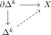
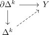

coskeletal simplicial set and unique boundary filling
Proposition
Let $X$ be a simplicial set.
TFAE:
- $X$ is n-coskeletal simplicial set
- each lifting problem

admits a unique solution
Proof
1) $\implies$ 2)
follows from
2) $\implies$ 1)
follows from
where a morphism
\begin{align*}
Y \rightarrow \mathrm{cosk}_n(X)
\end{align*}
corresponds to
\begin{align*}
\mathrm{sk}_n(Y) \rightarrow X
\end{align*}
Here $\mathrm{sk}_n$ is a left adjoint: hence it preserves the cw structure of a simplicial set
Hence if we may solve an extension problem

uniquely we may (uniquely) lift inductively $\mathrm{sk}_n(X),...,\mathrm{sk}_k(X),...$ and hence get a bijection
\begin{align*}
\mathrm{Hom}_{\mathrm{sSet}}(Y,X) \cong \mathrm{Hom}_{\mathrm{sSet}}(\mathrm{sk}_n(Y),X) \cong \mathrm{Hom}_{\mathrm{sSet}}(Y,\mathrm{cosk}_n(X))
\end{align*}
which by